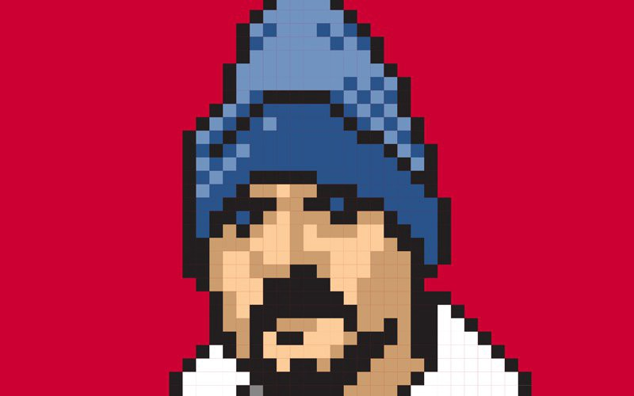

Of Patterns and Power: Web Standards Then & Now
IN “CONTENT Display Patterns” (which all front-end folk should read), Dan Mall points to a truth not unlike the one Ethan Marcotte shared last month on 24 ways. It is a truth as old as standards-based design: Construct your markup to properly support your content (not your design).
Modular/atomic design doesn’t change this truth, it just reinforces its wisdom. Flexbox and grid layout don’t change this truth, they just make it easier to do it better. HTML5 doesn’t change this truth, it just reminds us that the separation of structure from style came into existence for a reason. A reason that hasn’t changed. A reason that cannot change, because it is the core truth of the web, and is inextricably bound up with the promise of this medium.
Separating structure from style and behavior was the web standards movement’s prime revelation, and each generation of web designers discovers it anew. This separation is what makes our content as backward-compatible as it is forward-compatible (or “future-friendly,” if you prefer). It’s the key to re-use. The key to accessibility. The key to the new kinds of CMS systems we’re just beginning to dream up. It’s what makes our content as accessible to an ancient device as it will be to an unimagined future one.
Every time a leader in our field discovers, as if for the first time, the genius of this separation between style, presentation, and behavior, she is validating the brilliance of web forbears like Tim Berners-Lee, Håkon Wium Lie, and Bert Bos.
Every time a Dan or an Ethan (or a Sara or a Lea) writes a beautiful and insightful article like the two cited above, they are telling new web designers, and reminding experienced ones, that this separation of powers matters.
And they are plunging a stake into the increasingly slippery ground beneath us.
Why is it slippery? Because too many developers and designers in our amnesiac community have begun to believe and share bad ideas — ideas, like CSS isn’t needed, HTML isn’t needed, progressive enhancement is old-fashioned and unnecessary, and so on. Ideas that, if followed, will turn the web back what it was becoming in the late 1990s: a wasteland of walled gardens that said no to more people than they welcomed. Let that never be so. We have the power.
As Maimonides, were he alive today, would tell us: he who excludes a single user destroys a universe. Web standards now and forever.
...
Originally published at www.zeldman.com on January 5, 2016.
Designing and blogging since 1995, Jeffrey Zeldman is the publisher of A List Apart Magazine and A Book Apart, co-founder of An Event Apart design conference, and founder and creative director of studio.zeldman. Follow him @zeldman.